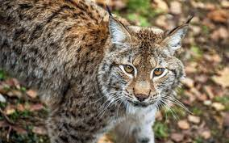

zone géographique : hémisphère nord
Lieu de vie: région de forêts boréales
alimentation: Carnivore
Longévité : 7 ans
Famille: Félins
Taille : 80 – 130 cm
mode de vie : Le lynx peut rester pendant plusieurs jours sur quelques hectares ou parcourir plus de 10 km sans
s'arrêter. C'est un bon grimpeur mais il vit surtout au sol.C'est un animal solitaire vivant sur de larges
espaces, qui chasse la nuit et n'a pas de gîte fixe.
Comportement : Le lynx commun est un animal territorial, solitaire, nocturne. Il est actif la nuit, du
crépuscule au lever du soleil. Le félin est très discret et difficile à observer. Le territoire du mâle couvre
celui de plusieurs femelles.